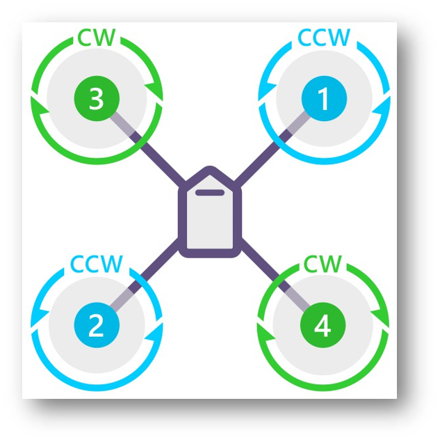
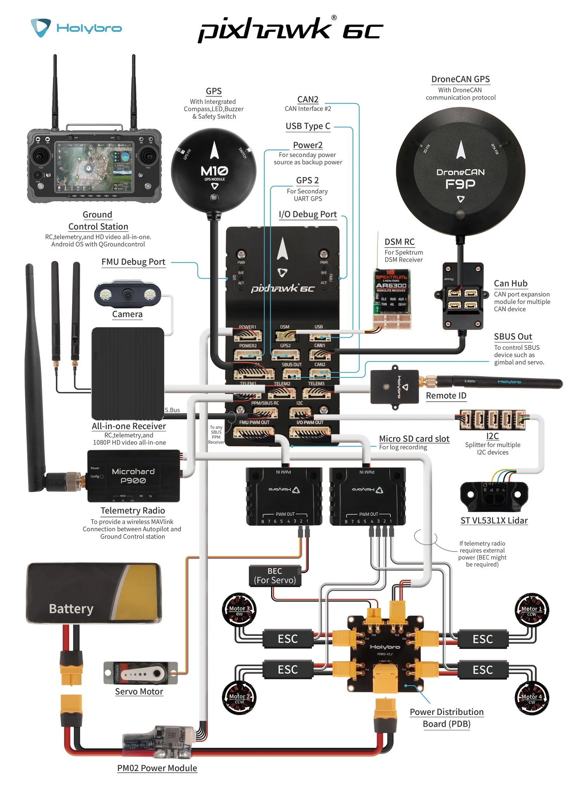

Design & modeling
Airframe geometry, mechanical interfaces, meshing studies and fabrication documentation.
Platform portfolio
Fixed-wing, QuadPlane and tiltrotor development, from V-tail, pusher and twin-motor airframes through propulsion integration, SITL, real flight tests and missions.

Aircraft from my project collection. Individual builds and development stages are documented below.
Airframe geometry, mechanical interfaces, meshing studies and fabrication documentation.
Printed airframe parts, propulsion, servos, power distribution and autopilot electronics.
ArduPilot and PX4 setup, sensor calibration, mission preparation and simulation workflows.
Bench checks, hover and transition work, flight-log review and live support during client trials.
This portfolio includes distinct builds and engagements. The delivery and validation reached are identified within each section.
Develop a 2.2 m VTOL aircraft combining four lift motors with separate forward propulsion.
Integrated airframe components, propulsion, power distribution, autopilot electronics, GNSS, RC and telemetry. Configured ArduPilot and PX4 workflows, calibrated sensors and supported control tuning, transitions and mission testing.
An assembled aircraft and a documented sequence of bench checks, configuration and iterative field tests.
My published portfolio describes field-test and mission-validation work. Photographs show the aircraft and integration stages; they do not independently quantify transition performance or payload capacity.
Develop a tricopter tiltrotor with a V-tail and integrated flight controls.
Printed and assembled structural components, integrated propulsion, servos and sensors, and configured Pixhawk 6X / SpeedyBee F405 ArduPilot workflows. Used a matching tricopter configuration to investigate settings before wider VTOL testing.
An integrated tiltrotor development platform with hover-test, mission-planning and configuration work.
The portfolio documents assembly, hovering and maiden-test material. A certified aircraft or a completed production validation programme is not claimed.
Convert a Talon fixed-wing airframe to a quadplane while retaining cruise flight capability.
Produced mounting parts, integrated four lift motors, electronics and a SpeedyBee F405 WING Mini, and configured ArduPlane calibration, hover modes, transition parameters and missions.
A physical VTOL conversion, integration work and flight-test sequence documented in my portfolio.
The published evidence includes an initial QStabilize takeoff and landing and mission-review material. Full operational transition reliability is not quantified.
Configure and diagnose a 4+1 flying-wing QuadPlane, addressing hover behaviour, attitude tracking and vibration through iterative test review.
Reviewed Pixhawk 6C / ArduPlane configuration, motor and servo assignments, compass and airspeed interfaces, calibration and failsafes. Analysed supplied flight logs and recordings, attitude response, vibration, clipping and FFT spectra, then documented filter and PID-tuning recommendations. Provided live field-test support through calls with the on-site team, helping interpret behaviour and agree on configuration changes and next checks.
An engineering report, vibration and notch-filter analyses, configuration guidance and live support calls with the field team. Selected recordings show airborne behaviour, including one intermediate stability-investigation sequence.
Two airborne hover excerpts and one stability-investigation sequence. I supported the on-site team through live calls during testing, alongside configuration and log review. Clips are muted web excerpts; originals remain in the private project archive.
My engineering analyses are separated from the third-party aircraft reference. These are historical project work samples, not universal setup instructions.
34-page public edition of my project report. Three map-bearing source pages are omitted.
13-page engineering work sample covering vibration review, logging and filter setup.
5-page follow-up work sample covering compass interference, FFT and filter review.
Third-party reference: Super Stingray VTOL user manual, Flightory / Szymon Wójcik, © 2024. Not authored by me and not a claim that this is the same airframe.


Scope: configuration, diagnostic analysis and remote client test support. The recordings span field trials and ground tests at different stages of the work; individual clips do not establish final aircraft certification or an unrestricted flight release.
Develop a modular fixed-wing proof-of-concept architecture with accessible foam structures and tube reinforcement.
Developed the aircraft package, parametric geometry, mechanical interfaces and workshop documentation. Prepared foam-cutting templates, CNC part information, tube-stock planning and assembly views.
A structured CAD and fabrication-preparation package with a build manual, part lists and printable workshop guides.
The documented checks are CAD and preparation checks. Physical structural validation, final equipment fits and flight testing remain separate activities.
Fixed-wing aircraft development across V-tail, pusher and twin-motor conventional-tail configurations, connecting airframe design with autonomous missions.
Designed and integrated airframe, propulsion and avionics interfaces, including differential-thrust configurations. Used Gazebo/SITL for mission and autopilot checks before real-world flight tests, mission planning and DJI O4 Pro camera/goggle integration.
Integrated aircraft configurations, simulation workflows, autonomous mission setup and field-test support.
The 4 kg payload figure describes the project use case.
Evaluate fixed-wing mission behaviour in a reproducible virtual environment before field testing.
Configured the Mini Talon model and virtual runway in Gazebo, connected ArduPlane and QGroundControl, and prepared AUTO-mode waypoint missions and parameter checks.
A fixed-wing simulation and mission-testing workflow.
Results belong to simulation. They are not presented as physical flight-test evidence.
Airframe design & fabrication
Original Cobra VTOL build photographs show structural parts, alignment and avionics integration. These stages sit within the aircraft-development portfolio.